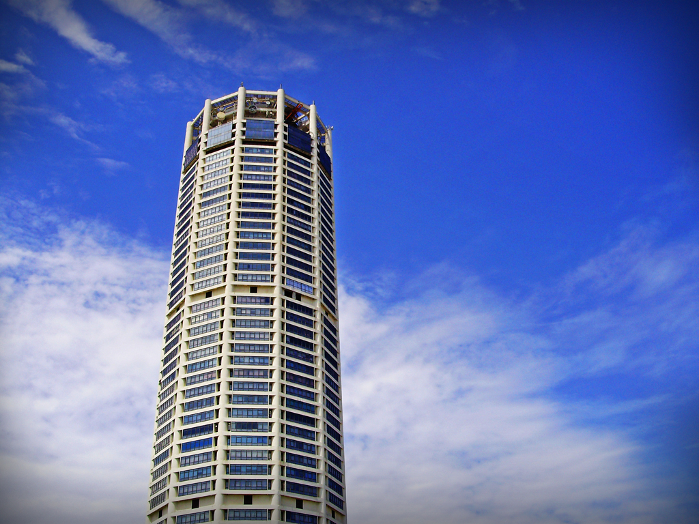
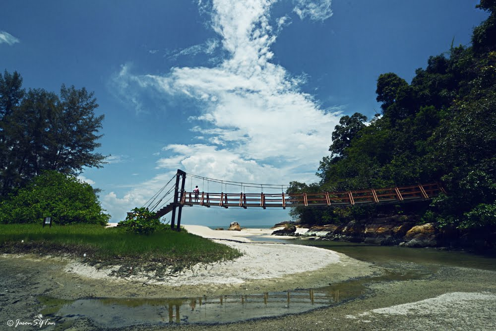
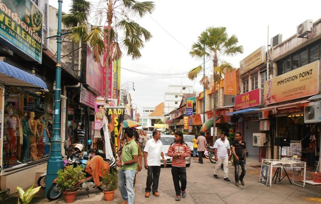

Take a Visit
Most of the building are build in century and still good maintain in penang. Let's take a good look the our historical building in penang.
-
Komtar Penang One of our signature building in Penang , also one of the tallest skyscraper in Penang and the sixth building in Malaysia . KOMTAR is an acronym for Kompleks Tun Abdul Razak (Second Prime Minister of Malaysia.) .This building is constructed in 1974 and completed in 1986.When the skyscraper topped out in 1985.. It contain a multipurpose complex , comprising retail outlets, a transportation hub and administrative offices for penang State Government Name By: Tun Abdul Razak bun Hussein Al-Haj
-
Penang Hill 
Penang Hill is a hill resort comprising a group of peaks on Penang Island, Malaysia. It is located within the Air Itam. Penang Hill is also known by the Malay name Bukit Bendera, which actually refers to Flagstaff Hill, the most developed peak. The top of the hill is accessible via the Penang Hill Railway from its base station at Hill Railway Station Road
-
Kek Lok Si ( Buddhist Temple ) 
The Kek Lok Si Temple is a Buddhist temple situated in Air Itam in Penang facing the sea and commanding an impressive view. Also one of the best known temples on the island. This entire complex of temples was built over a period from 1890 to 1930, an inspirational initiative of Beow Lean, the Abbot. An important pilgrimage centre for Buddhists from Hong Kong, the Philippines, Singapore and other countries in Southeast Asia.
-
Pantai Keracut Pantai Kerachut or Kerachut Beach is a lovely stretch of white sandy beach located in the Penang National Park on Penang Island and is home to the Penang Turtle Sanctuary, which is located just behind the beach.With such a beautiful beach and especially if you have just walked through the rainforest and are hot and sweaty.
-
Penang Little India Largely populated by the Indian community in Penang, Little India is fringed by famous streets like Jalan Masjid Kapitan Keling, Lebuh Pantai, Lebuh Chulia and Lebuh China. When the sun is up, this place is normally made colourful with bright sarees and aromatic scents of curry spices from the stalls there. By night fall, this area is illuminated with twinkling lights along with the blaring sounds of Bollywood tracks till the wee hours.